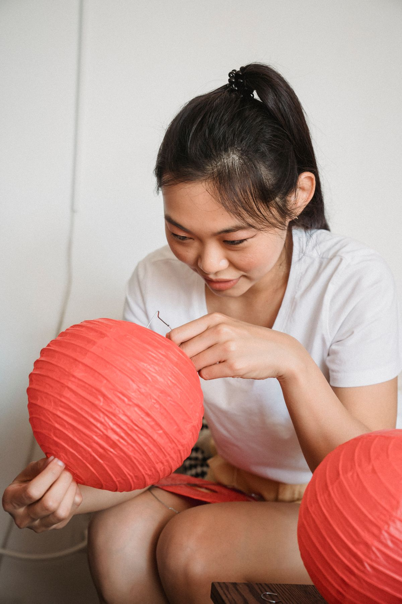
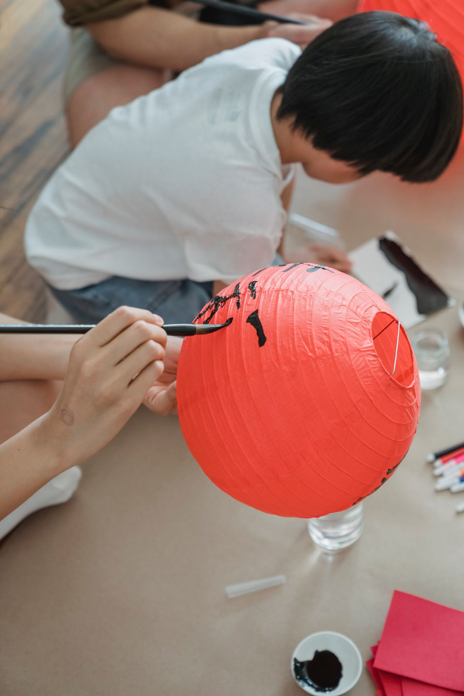

About & craft
Eleven winters at the bench
I learned this trade at my grandmother's kitchen table on the Iron Range, where December dark arrived at four in the afternoon and stayed for breakfast. Her rule was simple: you do not wait for the light to come back. You make some, and you share it.
The story
From a kitchen table to a harbour loft
My grandmother's lanterns were coffee tins and jam jars, punched and wired, and they lined the path to the sauna so nobody walked the ice in the dark. Mine are willow and tissue now, and the path is a city lakewalk, but the job has not changed: a lantern is a promise that somebody is expecting you home.
I came to Duluth for work that did not hold, stayed for the lake, and started the bench in 2015 with one borrowed table in a net loft that smelled of tar and spruce. The first solstice walk I led had nineteen lanterns and a thermos. The most recent had 412 lanterns and a fire marshal who asked if he could carry one. Growth is a fine thing; the bench still fits one maker, one long table, and a kettle.
People sometimes ask why I will not sell sky lanterns, the kind you light and release. Because what goes up comes down in someone else's field, on fire. A lantern you carry home is worth ten you watch drift away. That is the whole philosophy of this studio, and it fits on a postcard.

How a lantern is made
Four slow steps, no shortcuts worth taking
-
Step one
Soak and bend
Willow rods soak a full day until they bend without complaint. The frame is bent and lashed while wet, then left to set its shape overnight — a frame rushed here will fight you for a year.
-
Step two
Frame and flat-back
Walkers get a full willow cage; window lanterns get a flat bamboo back so they hang flush to the glass. Every rib is checked against the pattern board before the skin goes anywhere near it.
-
Step three
Skin and paste
Wet-strength tissue, pasted with wheat paste I cook in small batches. Two thin coats beat one thick one. Cut-outs — spruces, stars, a name — are cut before pasting, never after.
-
Step four
Dry, fit, light
A day on the drying line, then the light is fitted and the lantern burns a full evening on the test shelf before it is wrapped. If it flickers wrong, sags, or smells of paste, it does not leave.

The light rule
Batteries walk. Candles stay home.
A carried lantern moves through wind, mittens, children and snow. In eleven winters I have fitted exactly zero open flames to a lantern that leaves the ground, and that number is not changing. LED tea lights run about a hundred hours on a battery; the timer candles run six hours a night for roughly forty nights. Nobody at a walk has ever once said “I wish this paper box had real fire in it.”
Real votives belong to lanterns that stand still: a remembrance lantern on its stake, a window lantern on a sill, always in a glass cup, always where a person can see it. There, flame is the honest light, and I will not pretend a battery does that job as well.
Credentials, briefly: eleven winters at this bench; workshop teaching through the local folk school since 2019; the city's solstice walk led nine years running; first aid and event marshal certificates current, because a walk of 340 people deserves both.
Care & repair
A lantern should outlive its first winter
Storing it
Dry it a full day indoors, then hang it or box it loosely with tissue in the gaps. Never fold a skinned lantern flat; the frame remembers insults.
free advice
Torn skin
Bring it to the bench. Re-papering any frame I made is free for the life of the frame — 63 came back last winter, and every one went home skinned.
free, forever
Other makers' lanterns
Repaired at bench cost, parts at what they cost me. A good lantern is a good lantern, whoever bent it.
at cost
Batteries
One battery set is fitted at collection. Spares ride free in every walk marshal's pocket on the night — ask, do not walk dark.
included
Come and see the bench.
Open hours are Thursday to Saturday, ten to four, October through February. The kettle is on. Or write first — most orders start as a letter.